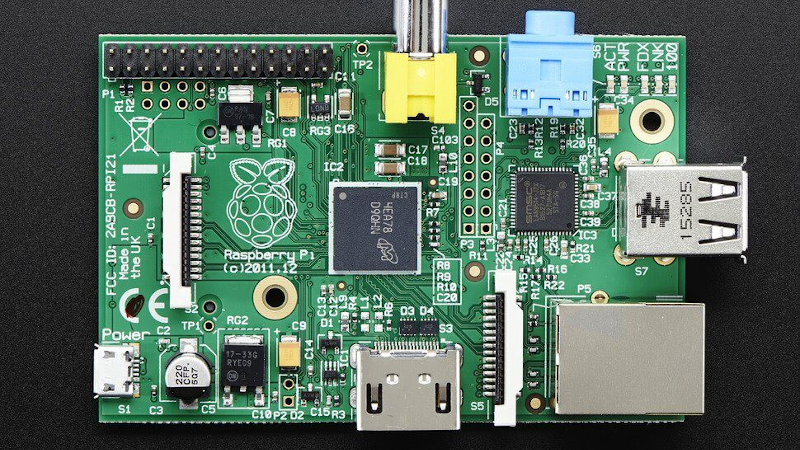
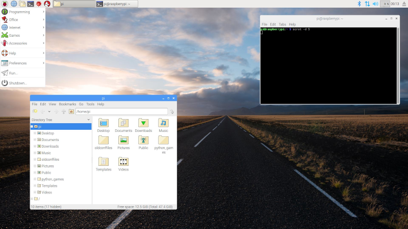

Raspberry Pi is not for me.
2020-11-28

Raspberry Pi is Great
The Raspberry Pi line of single board computers are great for low-powered always-on projects. They are meant for students, hobbyists, and tinkerers.
The top 5 projects seem to be:
- Learning Linux
- Python Programming
- Retro Pi Gaming
- Plex Media Server
- NextCloud Network Attached Storage
Unfortunately, after years of experimenting with a Pi I've realized it's not for me.
My Old Pi
Back in 2011 I bought a 1st gen model b rev 2 Raspberry Pi. (pictured in the photo above)
It has an ARMv6 processor running at 700Mhz with 512MB of ram. The $40.00 kit came with a Pi, power supply, acrylic case, an 8GB SD Card with Noobs and HDMI cable.
I didn't initially have an idea of what I wanted to do with it. I thought after setting it up I'd find a use for it.
Upon boot I selected the default Rasbian OS (now known as Raspberry Pi OS) and spent 20 minutes checking out the desktop.

At the time I had already had a desktop running Linux so it wasn't a new experience for me.
In fact, I was disappointed by the slow performance of the Pi and the look and feel of Rasbian OS. It seemed more like a kids toy than a real computer.
Attempting to open the file manager or launching an app took minutes and stopped the mouse or anything else from running. Browsing the web was a nightmare. And due to its hardware limitations I found it impossible to watch videos on YouTube.
I did some research online looking for a good use for my Pi.
I spent a few hours setting up Retro Pi and played some single player NES and SNES games. It worked fairly well but there were a few games that ran slowly with errors.
After the installation of Retro Pi I used it about 3 times and once the novelty wore off it sat turned off and unused for about a year.
Then I tried connecting a 1TB drive and using it as a low-power always-on NAS. I ended up wasting 2 days researching and tinkering trying to get NextCloud to work. When I got it working I found, yet again, the hardware was too slow to be of any practical use.
The file transfer speeds were bottlenecked by the slow processor. At this point I was frustrated and couldn't think of a good use for the Pi.
I turned it off and let it sit unused ever since.
Recycled Desktop Solution
The Raspberry Pi projects listed above can be accomplished with POP OS and an inexpensive used desktop PC. The PC will have more power, speed, and reliability, but cost more in electricity.
Again, Raspberry Pi single board computers are great for low-powered always-on projects.
They are not for me because I cannot justify spending any money on a device that doesn't fit my needs.